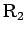

Inhalt Index DeskTop Bronstein

 Algebra und Diskrete Mathematik Fuzzy-Logik Wissensbasierte Fuzzy-Systeme Kognitive Systeme
Algebra und Diskrete Mathematik Fuzzy-Logik Wissensbasierte Fuzzy-Systeme Kognitive Systeme


Die Auswertung mit der min-Operation der Regel  liefert die Fuzzy-Menge in den Abbildungsteilen a - c.
liefert die Fuzzy-Menge in den Abbildungsteilen a - c.
Die entsprechende Auswertung für die Regel  zeigen die Abbildungsteile d - f. Aus der Fuzzy-Aussagenmenge (Abbildungsteil g) wird letztlich die Stellgröße mit einer Defuzzifizierungsmethode berechnet.
| (5.419) |
| (5.420) |